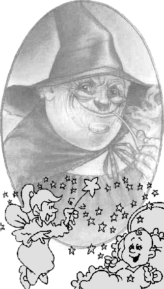

Введение в романо-германскую филологию
| лекция 1 | лекция 7 | лекция 8 |
| лекция 2 |  |
лекция 9 |
| лекция 3 | лекция 10 | |
| лекция 4 | лекция 11 | |
| лекция 5 | лекция 12 | |
| лекция 6 | лекция 13 |
ЛЕКЦИЯ 13:
Сказка про братьев Гримм
Сколько веревочке не виться, а finis coronat opus .
Мы приблизились к эпохе последних могикан РГФ, которые умудрялись двигать свою науку единолично, а не в стройных рядах группы авторов или в коллективных шеренгах НИИ.
Речь идёт о прошлом, 19-м столетии, когда РГФ стала больше германской, чем романской. Когда филология сфокусировалась не на духе и идеях, что тщаться запечатлеть и передать потомкам в текстах, но на материи применяемой в таких попытках.
Гуманисты ходили вширь и вверх, германские филологи пошли вглубь.
Франц Бопп (09.14.1791-10.23.1867) установил важность санскрита
когда начинаешь сравнивать между собой другие языки индо-европейской группы.
(Сидя дома и не гуляя, санскрит, повидимому, меньше изменился, чем пошлявшиеся по свету прочие отпрыски древнего пра-языка.)
Плюс к тому, Бопп разработал систему/подход для анализа языков.
В 1816 была опубликована его работа Uber Conugationsystem der Sanscritschprache;
• 27-67 г.г. он преподавал ориентальную литературу в берлинском университете;
• 27 г. – граматика санскрита;
•30 г. – глосарий санскрита и латыни;
• 33-52 г.г. – сравнительная граматика 7 евроязыков в 6 частях;
• 40 г.– сравнил малайо-индонезийский (австралогруппа) и индо-европейский языковые семьи;
• 54 г.– работа об ударении в греческом языке и санскрите.
Суховато изложено? И впрямь – дата рождения, дата смерти, да список работ. Много ли тут наплаваешь развернув паруса воображения?
То ли дело сказка про братьев Гримм.
Яков Людвиг Карл, он был постарше—1/4/1785—а братец Вильгельм Карл на год моложе—2/24/1786, а за ними было ещё трое спиногрызов в многодетной семье папаши Филипа Вильгельма Гримма, что зарабатывал на жизнь служа в городском суде Steinau в земле Гессен, где и дед их и прадед аккуратно прожили свои жизни, работая священиками реформистской церкви.
Бедный папа приказал долго жить в 96-м, но братья окончили-таки гимназию в г. Кассель, а в 1802-06 г.г., решив пойти по стопам отца, изучали право в Марбургсом университете.
В 1805 г. Яков, сдружившись с университетским работником Савиньи, ездил в Париж – рыться в средневековых манускриптах, а в следущем году, после смерти матушки, поступил работать секретарём/писцом в горвоенкомат Касселя, а когда Кассель, вместе со всей Германией, стал частью наполеоновой империи (в том же 1806 г.), Яков стал личным библиотекарем короля немецкой земли Вестфалия с французским именем Жером.
С виду Яков был типичный ученый сухарь—невысокий и тощий—а Вильгельм росту был отменного, лицом кругл, но здоровьем слаб и до 1815 г. нигде не работал, а только любил искусство.
Наполеонова империя накрылась, как все предыдущие, и в 1813 г. Яков вернулся на гессеновскую службу.
В 14-15 г.г., по знакомой уже дорожке, ездил в Париж за картинами и книгами, что французы награбили в Гессене и Пруссии.
(До чего цивилизация варваров довела – начали грабить чего ни съешь, ни на себя не напялишь.)
Вильгельм с 15-го года начал работать библиотекарем в Касселе и в 16-м Яков пристроился туда же.
Жили они экономно, а работали прилежно, закладывая фундамент интересов на последущую свою жизнь.
(Вот где, между прочим, собака зарыта – когда нормальные люди заняты сколачиванием состояния и обзаведением нужными связями, филологи вынюхивают пыль с разных книжных полок, чтоб определить с какой они в дальнейшем сильней будут тащиться.)
Время, как вы могли заметить, было зыбкое и хлёсткое—время перемен и встрясок—в моду вошёл даже «готическтий романтизм» с призраками, магией и прочей жутью-нежитью.
Но не тут-то было всей этой чертовщине свихнуть реалистичные умы братьев Гримм – потомков священического рода, что из поколения в поколение жили размеренной и упорядоченной жизнью.
Однако, совсем не откликаться на веяния времени они тоже не могли. Ещё в университетские годы они, по просьбе друзей-филологов, Ахима фон Арнима и Клеменса Бретано, собирали народные песни и сказки (05 г.), а в сопроводительных очерках-заметках толковали в чём суть разницы между народной поэзией и всей остальной писаниной.
«Народная поэзия – единственно истинная поэзия, передающая извечные радости и печали, надежды и страхи рода людей.»
При содействии фон Арнима издали они Kinder und Hausmarchen – сказки для детей и взрослых, всего числом – 200, собраных, главным образом, из устных пересказов; в них через столетия была передана душа, верования и воображение людей.
Вильгем придал им литературную форму, сохранив, однако, народный дух – никаких вычурных фантазий в стиле поэтических сказок романтической школы
Результат получился троякий:
- сказки братьев Гримм нашли широкое распространение в Германии и во всем мире (переведены на 70 языков);
- выполненная ими работа стала первым «научным» собиранием сказок и послужила моделью/образцом собирания фольклора в других странах;
- примечания к сказкам и очерки на эту тему заложили основу науки о народных преданиях – фольклористики.
Сборник исторических и местных легенд Германии Deutchen Sagen (16-18 г.г.) не стал особо популярным и в 20-м они осуществили перевод и издание СКАЗАНИЙ ЮЖНОЙ ИРЛАНДИИ Томаса Крукера, пристегнув к нему длиннючее предисловие.
(До чего же все плотно увязывается в этом мире – отпрыски немецких священиков распространяют в Германии ирландские мифы, а на одном из предыдущих витков истории ирландские священики распространяли в Германии библейские мифы (и совсем уже в скобках: во время второй мировой войны из всех европейских стран подвергшихся нацистской агрессии одна только Ирландия не объявляла войну Германии, а хранила нейтралитет.))
Затем братья Гримм обратились к работе со старинными текстами. Вильгельм составил мощный труд Die Deutche Heldensage – собрание тем и имён из героических легенд зафиксированных в германской литературе и искусстве с 6 по 16 столетия, сопроводив его очерком об искусстве саги (26 г.).
Яков помогал брату, но сообразил, что сказочный огород для двоих малость тесноват и обратился к филологии и написал в 19-37 г.г. труд Deutche Grammatik, где слово «deutche » использовано в своем исконном смысле – «общий».
В этой Общей Граматике впервые прослеживается история всех германских языков и там же было изложено открытие Р. Раска о закономерности изменения звуков в родственных языках.
Поскольку работы Раска были писаны на мало кому известном датском языке, а труды Гримма на доступном более широким слоям публики немецком, то упомянутое явление получило название «закон Гримма».
В 24-м Яков перевёл сербскую граматику своего друга Вука Караджича (..?..), присовокупив эрудированное предисловие о славянских языках и литературах.
В 28-м из германских народных сказок он повыуживал свидетельства о верованиях и законах древних германцев, показывая что именно у тех было в большой моде при покарании преступников – сечь им головы, варить в кипящем молоке, или жечь в печи.
Работа Rechtalterturmer вызвала волну подражательских исследований во Франции, Нидерландах, России, на Балканах, где тоже осознали, что «сказка – ложь, да в ней намек...»
В 29-м братьев не продвинули по службе—из политических соображений—когда умер их более высокочиновный коллега. Они обиделись и переехали в Гетингенский университет соседнего королевства, где стали библиотекарями и профессорами.
Якова на новом месте опять потянуло на мифы и он составил Deutche Mythologie, где из народной поэзии и сказок выслеживаются до-христианские веры и суеверия германцев и сравнивает их с классическими и христианскими суевериями.
Когда король Гановера, Эрнст Август при своем восшествии на престол отменил конституцию 33-го года—как чересчур вольную—семеро гетингентских профессоров подписали протест (братья в том числе) и король предложил им покинуть страну.
Гриммы 3 года прожили в эмиграции, наперебой получая приглашения от университетов Гамбурга, Марбурга, Ростока, Веймара; из Бельгии, Франции, Нидерландов.
В 40-м они приняли приглашение прусского короля Фредерика Вильгельма IV и стали работать в берлинской академии наук.
Ещё в 38-м, для заработка в эмиграции, начат был грандиозный труд – подготовка издания словаря немецкого языка за предшествовавшие 300 лет: от Лютера до Гёте, который включает в себя исторические варианты разных слов, представляет их этимологию и семантическое развитие и всё это сопровождается примерами из пословиц и идеом.
Работа над данным Deutche Worterbuch потребовала труд нескольких поколений филологов, продолжаясь до нынешнего—20-го—столетия.
Яков дожил до буквы F, а Вильгельм лишь до буквы D.
Многим странам захотелось иметь такие же словари для своих языков.
Подобная работа была начата в Британии, Франции, Нидерландах, Швеции, Швейцарии.
20 лет прожили братья Гримм в прусской столице в почёте и уважении и в покое от финансовых забот. Все академии Европы почитали за честь числить их своими членами.
Более крепкий здоровьем, Яков ездил для научных изысков во Францию, Нидерланды, Бельгию, Швейцарию, Австрию, Италию, Данию, Швецию и жена на него не ворчала, потому что он был холостой.
Вильгельм же женат был на Доротее (D!) Вильд из Кесселя, в сотрудничестве с которой произвел 3 детей.
Тут и сказочке конец...
А со сказочкой кончилась и филология – не прижилась она в бурном 20 столетии и нынче слово «филология» сохранилось лишь в названиях пары-другой научных журналов, основанных в глубинах прошлого—19-го века—да ещё в учебных программах провинциальных ВУЗов, а для остального учёного (и не слишком учёного) мира существует теперь наука лингвистика, которая взяла на себя обязанности следить за тем, как отзеркаливается в литературе культура народов.
Причём наука эта разработала свой отдельный лингво-язык, который без спецподготовки кажется такой же китайской грамотой, как язык математики или микро-молекулярной химии.
А это значит, что лингвистика вышла за пределы романо-германских рамок и потому мы можем со спокойной совестью сказать, что романо-германская филология осталась в сказочно уютном 19-м столетии.
Но она всегда готова дать приют и утешение лингвистам, притомившимся от проникновений в ткань языка до электронно-микроскопических уровней или продрогшим на стратосферных высотах деструктивного анализа.
Всех приветит-приютит старая добрая матушка-РГФ и расскажет какую-нибудь из своих сказочек, в которых намёк и ещё затаенный вопрос, на который—хоть вы и стратосферничаете и мелкоскопничаете, и копаете-колупаете, и компьютерами вычисляете—ответа всё нет и нет.
Как раз этот вопрос и предложу вам в качестве задания к данной—заключительной—лекции.